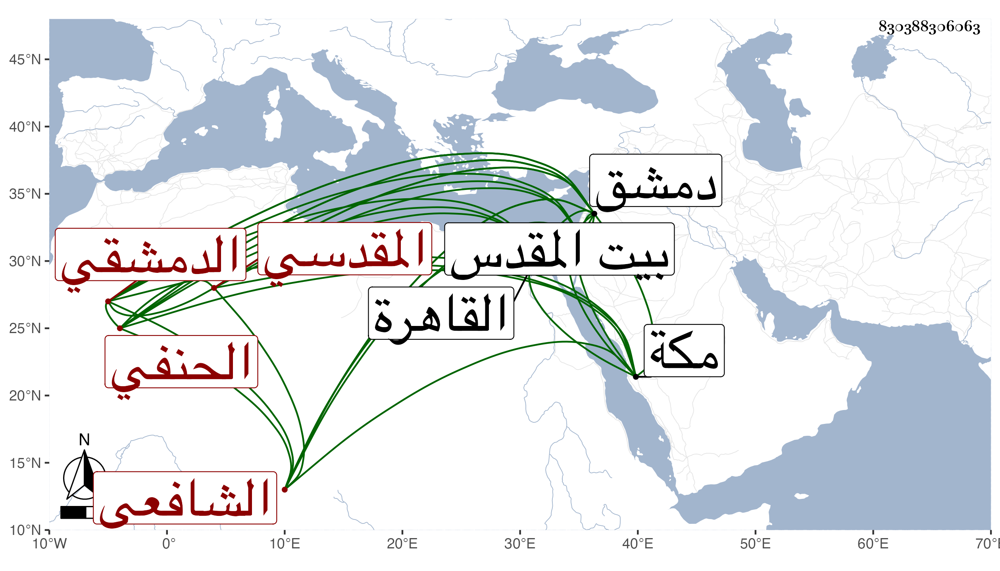

0902Sakhawi.DawLamic.ITO20230111-ara1.EIS1600.830388306063
Biography ID: 830388306063
إبراهيم بن أحمد بن أحمد بن محمود بن موسى المقدسي الأصل الدمشقي الحنفي ثم الشافعي أخو الزين عبد الرحمن الهمامي وعبد الرزاق ومحمد الآتي ذكرهم وكذا أبوهم . ولد في ربيع الأول سنة إحدى وأربعين وثمانمائة بدمشق ونشأ بها فحفظ القرآن والشاطبيتين والمنهاج الفرعي والملحة وايساغوجي وتصريف العزى وغيرها وخذ في الفقه وغيره عن النجم بن قاضي عجلون وجمع العشر على والده والسبع على الشمس بن عمران ثم بالقاهرة إذ قدمها في سنة أربع وسبعين على الزين عبد الغني الهيثمي وقرأ على حينئذ في الأذكار وغيره وأظنه أخذ عن البقاعي وجماعة وحج مرارا وزار بيت المقدس وقطنه وقتا ولقيتي بمكة أيضا ومعه ولده محمد فعرض محافيظه على وكان يؤدب الأطفال بكلاسة الجامع الأموي ونعم الرجل كان فضلا وخيرا . مات في ليلة الجمعة ثاني رمضان سنة أربع وتسعين بدمشق وصلى عليه من الغد وكانت جنازته حافلة رحمه الله وإيانا .
